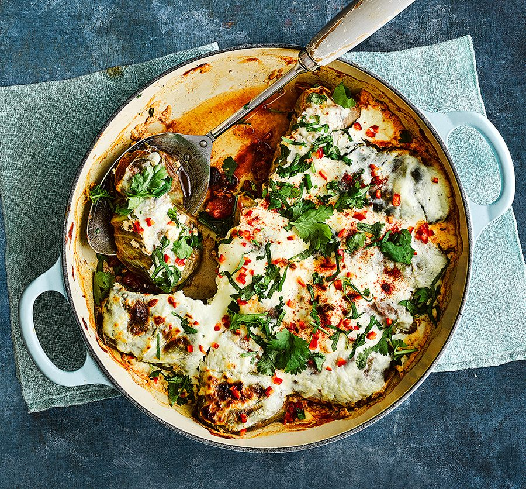

Cabbage roll enchiladas
Ingredients
- 1 tsp olive or rapeseed oil
- 2 peppers, deseeded and finely chopped
- 500g 5% fat steak mince
- 2 tbsp smoked paprika, plus extra to serve
- 1 tbsp ground cumin
- 1 tbsp ground coriander
- 400g chopped tomatoes
- 2 tbsp tomato purée
- 1 tbsp vegetable bouillon powder (ensure it is gluten-free if needed)
- 3 garlic cloves, finely grated
- 1 red chilli, deseeded and finely chopped, plus extra to serve
- 2 x 400g cans black beans, undrained
- 1 large sweetheart cabbage, leaves peeled away (you’ll need 12 leaves)
- 150g bio yogurt
- 25g finely grated mature cheddar
- handful of chopped coriander and lime wedges, to serve